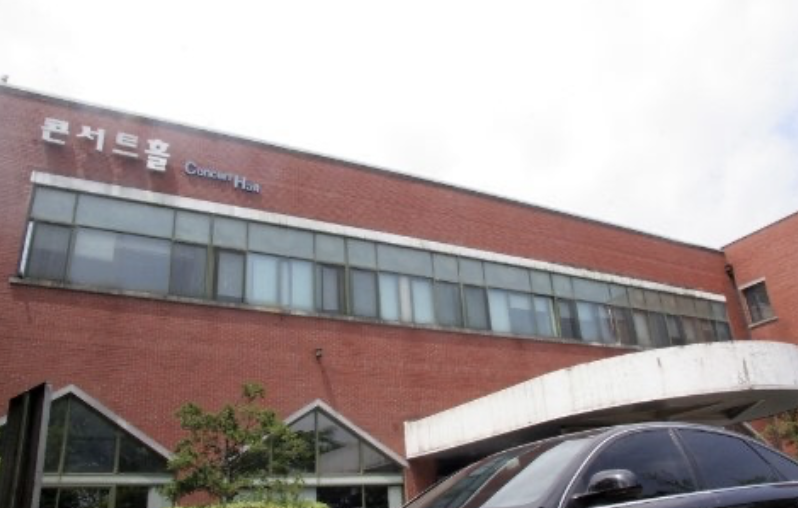
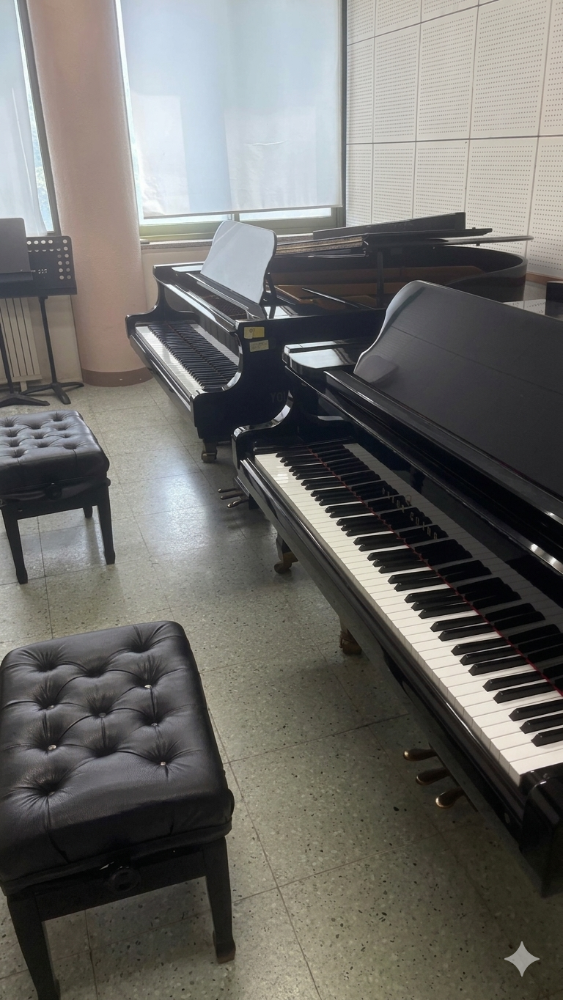

이 장소가 의미 있는 이유
저는 음악과로 입학해서 전과했기에, 저의 첫 가톨릭대인 콘서트홀이 어떤 장소보다도 가장 뜻깊습니다.
찾아가는 방법
정문에서 하염없이 올라가다 보면 나오는 으스스한 건물
여기에서 해볼 것
- 5월 아우름제때 음악과에서 여는 귀신의 집 탐방하기
- 연주회가 열릴 때 반드시 감상해보기
음악과 동기들과 배달 시켜먹기 좋은 장소


저는 음악과로 입학해서 전과했기에, 저의 첫 가톨릭대인 콘서트홀이 어떤 장소보다도 가장 뜻깊습니다.
정문에서 하염없이 올라가다 보면 나오는 으스스한 건물